library(tidyverse)
library(tidytext)
library(gutenbergr)Setting up the programming environment
gutenberg_works(title == "We") %>%
glimpse()Rows: 1
Columns: 8
$ gutenberg_id <int> 61963
$ title <chr> "We"
$ author <chr> "Zamiatin, Evgenii Ivanovich"
$ gutenberg_author_id <int> 51700
$ language <chr> "en"
$ gutenberg_bookshelf <chr> NA
$ rights <chr> "Public domain in the USA."
$ has_text <lgl> TRUEwe <- gutenberg_download(61963, strip = TRUE)we <- read_rds("data/we.rds") %>% select(-gutenberg_id)we# A tibble: 7,793 × 2
gutenberg_id text
<int> <chr>
1 61963 "EUGENE ZAMIATIN"
2 61963 ""
3 61963 "WE"
4 61963 ""
5 61963 "Authorized Translation from the Russian"
6 61963 ""
7 61963 " By"
8 61963 " GREGORY ZILBOORG"
9 61963 ""
10 61963 " New York"
# ℹ 7,783 more rows# Add line numbers to divide text into sections
we %<>%
mutate(author = "Yevgeny Zamyatin",
title = "We") %>%
select(author, title, text) %>% # Remove book ID number
print()# A tibble: 7,793 × 3
author title text
<chr> <chr> <chr>
1 Yevgeny Zamyatin We "EUGENE ZAMIATIN"
2 Yevgeny Zamyatin We ""
3 Yevgeny Zamyatin We "WE"
4 Yevgeny Zamyatin We ""
5 Yevgeny Zamyatin We "Authorized Translation from the Russian"
6 Yevgeny Zamyatin We ""
7 Yevgeny Zamyatin We " By"
8 Yevgeny Zamyatin We " GREGORY ZILBOORG"
9 Yevgeny Zamyatin We ""
10 Yevgeny Zamyatin We " New York"
# ℹ 7,783 more rowsHow to tidy text data
The text data is currently in a dataframe, but it is not tidy in the sense of being compatible with tidy tools. We need to transform it so that it is in a different format, with one observation per row.
When we do text analysis, the observations we are interested in aren't the whole talks at once, but rather individual tokens. A token is a meaningful unit of text for analysis; in many cases, this just means a single word. The process of tokenization identifies and breaks apart text into individual tokens. You can use tidytext's unnest_tokens() function to accomplish all of this at once, both the tidying and the tokenization.
# Tokenize the data
words_we <- we %>%
unnest_tokens(word, text) %>% # Break lines into words
print()# A tibble: 65,205 × 3
author title word
<chr> <chr> <chr>
1 Yevgeny Zamyatin We eugene
2 Yevgeny Zamyatin We zamiatin
3 Yevgeny Zamyatin We we
4 Yevgeny Zamyatin We authorized
5 Yevgeny Zamyatin We translation
6 Yevgeny Zamyatin We from
7 Yevgeny Zamyatin We the
8 Yevgeny Zamyatin We russian
9 Yevgeny Zamyatin We by
10 Yevgeny Zamyatin We gregory
# ℹ 65,195 more rowsWe piped in the original, non-tidy data set. We gave an argument that we want to tokenize into and an argument that we are tokenizing from.oving stop words
words_we %>%
anti_join(get_stopwords()) %>%
count(word, sort = TRUE)# A tibble: 5,695 × 2
word n
<chr> <int>
1 like 365
2 one 303
3 eyes 179
4 yes 151
5 now 136
6 everything 134
7 well 134
8 know 128
9 330 117
10 something 117
# ℹ 5,685 more rowsThese are now more interesting words and are starting to show the focus of the book.
Visualize top words
words_we %>%
# remove stop words
anti_join(get_stopwords()) %>%
count(word, sort = TRUE) %>%
slice_max(n, n = 20) %>%
mutate(word = reorder(word, n)) %>%
# put `n` on the x-axis and `word` on the y-axis
ggplot(aes(x = n, y = word)) +
geom_col(fill = "darkslateblue") +
theme_bw()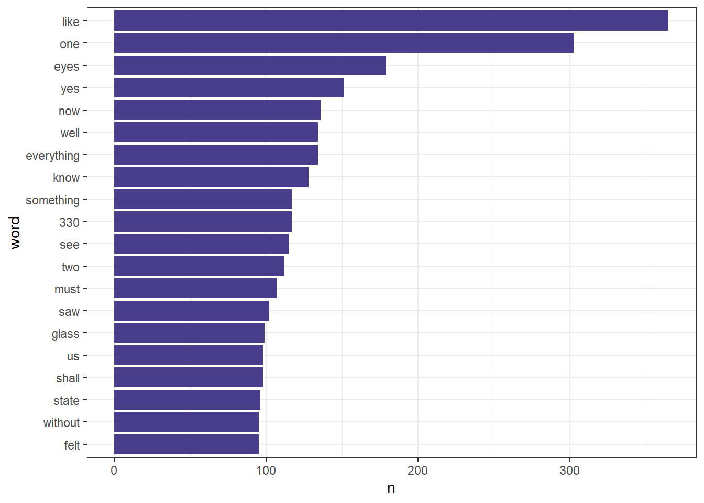
SENTIMENT FREQUENCIES
# Calculate and print score frequencies. Sentiment scores
# come from the AFINN lexicon, which scores the sentiment of
# words on a scale of -5 (most negative) to +5 (most
# positive)
score_freq_we <- words_we %>%
inner_join(get_sentiments("afinn")) %>%
group_by(value) %>% # Grouping by sentiment scores
summarize(n = n()) %>%
print()# A tibble: 9 × 2
value n
<dbl> <int>
1 -4 17
2 -3 167
3 -2 679
4 -1 660
5 1 754
6 2 935
7 3 323
8 4 52
9 5 1# Graph score frequencies (change scale to -5, +5)
score_freq_we %>%
ggplot(aes(value, n)) +
geom_bar(stat = "identity", fill = "darkslateblue") +
scale_x_continuous(breaks = seq(-5, 5, by = 1)) +
ggtitle("We by Zamiatin: Sentiment Scores by Words") +
xlab("Sentiment Score") +
ylab("Frequency of Words") +
theme_classic()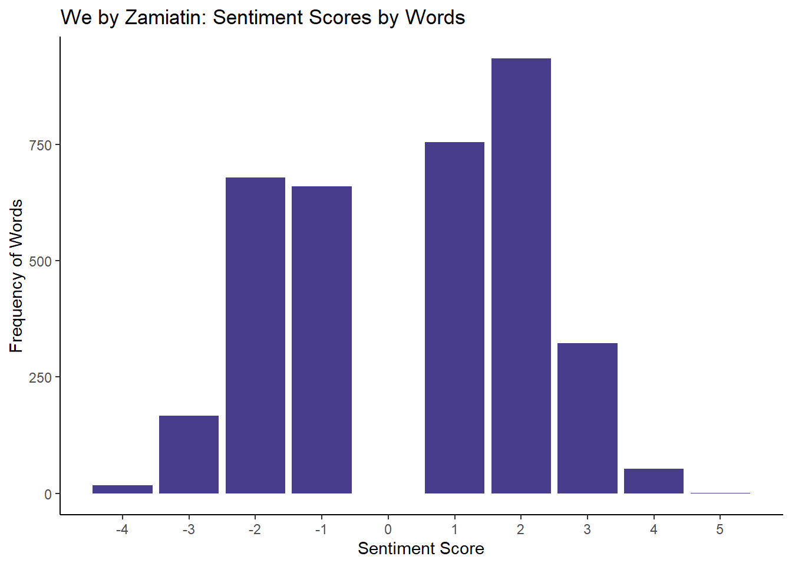
SENTIMENT ARC
# Divide the text into sections of 100 lines and calculate a
# sentiment score for each section
words_we <- words_we %>% mutate(line = row_number())
score_arc_we <- words_we %>%
inner_join(get_sentiments("afinn")) %>% # Use afinn
group_by(section = line %/% 100) %>% # Divide text
summarize(score = mean(value)) %>% # Section scores
print()# A tibble: 645 × 2
section score
<dbl> <dbl>
1 0 1.75
2 1 0.75
3 2 0
4 3 0.778
5 4 0.333
6 5 2.25
7 6 0.545
8 7 0.4
9 8 1
10 9 -0.286
# ℹ 635 more rows# Plot scores by section to view narrative arc
score_arc_we %>%
ggplot(aes(section, score)) +
geom_hline(yintercept = 0, col = "red") +
geom_line(col = "darkslateblue") +
geom_smooth(method = loess, col = "gray40") +
ggtitle("We by Zamiatin: Mean Sentiment Score by Section") +
ylab("Mean Sentiment Score") +
xlab("Section of 100 Lines") +
theme_classic()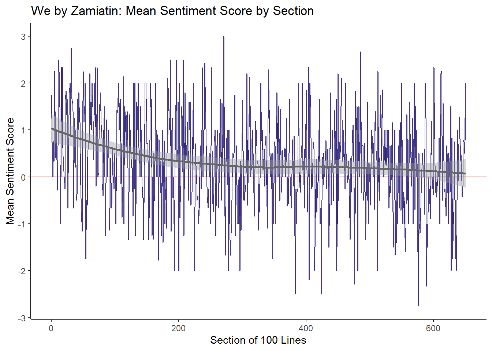
❤️ The Elementary Particles
elementary_particles <-
tibble(
author = "Michel Houellebecq",
title = "The Elementary Particles",
text = read_lines("data/the_elementary_particles.txt", skip_empty_rows = TRUE)
)
head(elementary_particles, 10)# A tibble: 10 × 3
author title text
<chr> <chr> <chr>
1 Michel Houellebecq The Elementary Particles "THE ELEMENTARY PARTICLES "
2 Michel Houellebecq The Elementary Particles "by Michel Houellebecq "
3 Michel Houellebecq The Elementary Particles "TRANSLATED FROM THE FRENCH "
4 Michel Houellebecq The Elementary Particles "BY FRANK WYNNE "
5 Michel Houellebecq The Elementary Particles "Alfred A. Knopf New York 2000 "
6 Michel Houellebecq The Elementary Particles "Prologue "
7 Michel Houellebecq The Elementary Particles "This book is principally the st…
8 Michel Houellebecq The Elementary Particles "life in Western Europe, in the …
9 Michel Houellebecq The Elementary Particles "for much of his life, he was no…
10 Michel Houellebecq The Elementary Particles "He lived through an age that wa…tidy_elem_part <- elementary_particles %>%
mutate(linenumber = row_number()) %>%
unnest_tokens(word, text)
tidy_elem_part# A tibble: 87,196 × 4
author title linenumber word
<chr> <chr> <int> <chr>
1 Michel Houellebecq The Elementary Particles 1 the
2 Michel Houellebecq The Elementary Particles 1 elementary
3 Michel Houellebecq The Elementary Particles 1 particles
4 Michel Houellebecq The Elementary Particles 2 by
5 Michel Houellebecq The Elementary Particles 2 michel
6 Michel Houellebecq The Elementary Particles 2 houellebecq
7 Michel Houellebecq The Elementary Particles 3 translated
8 Michel Houellebecq The Elementary Particles 3 from
9 Michel Houellebecq The Elementary Particles 3 the
10 Michel Houellebecq The Elementary Particles 3 french
# ℹ 87,186 more rowsMost common positive and negative words
tidy_elem_part %>%
inner_join(get_sentiments("bing")) %>%
count(word, sentiment) %>%
group_by(sentiment) %>%
slice_max(n, n = 10) %>%
ungroup() %>%
mutate(word = reorder(word, n)) %>%
ggplot(aes(n, word, fill = sentiment)) +
geom_col(show.legend = FALSE) +
facet_wrap(~ sentiment, scales = "free") +
theme_classic()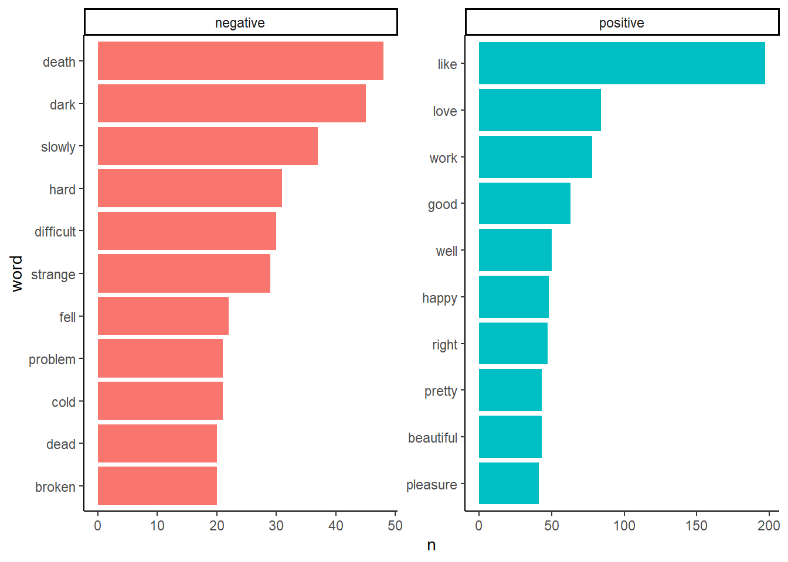
tidy_elem_part %>%
inner_join(get_sentiments("afinn")) %>%
group_by(value) %>% # Grouping by sentiment scores
summarize(n = n()) # A tibble: 10 × 2
value n
<dbl> <int>
1 -5 63
2 -4 108
3 -3 384
4 -2 904
5 -1 788
6 1 786
7 2 1001
8 3 580
9 4 33
10 5 1tidy_elem_part %>%
inner_join(get_sentiments("afinn")) %>%
group_by(value) %>% # Grouping by sentiment scores
summarize(n = n()) %>%
ggplot(aes(value, n)) +
geom_bar(stat = "identity", fill = "lightblue", color = "black") +
scale_x_continuous(breaks = seq(-5, 5, by = 1)) +
ggtitle("The Elementary Particles Sentiment Scores by Words") +
xlab("Sentiment Score") +
ylab("Frequency of Words") +
theme_classic()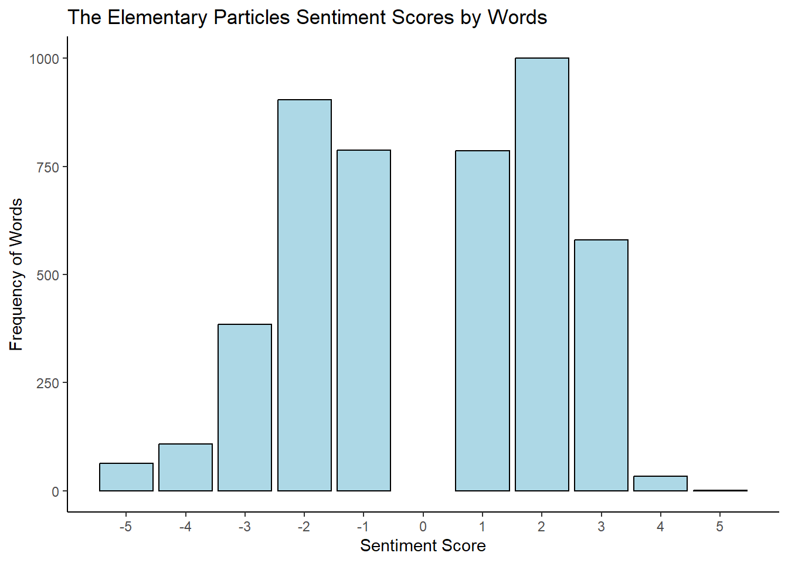
tidy_elem_part %>%
inner_join(get_sentiments("afinn")) %>% # Use afinn
group_by(section = linenumber %/% 100) %>% # Divide text
summarize(score = mean(value)) %>% # Section scores
ggplot(aes(section, score)) +
geom_hline(yintercept = 0, col = "red") +
geom_line(col = "darkslateblue") +
geom_smooth(method = loess, col = "gray40") +
ggtitle("The Elementary Particles: Mean Sentiment Score by Section") +
ylab("Mean Sentiment Score") +
xlab("Section of 100 Lines") +
theme_classic()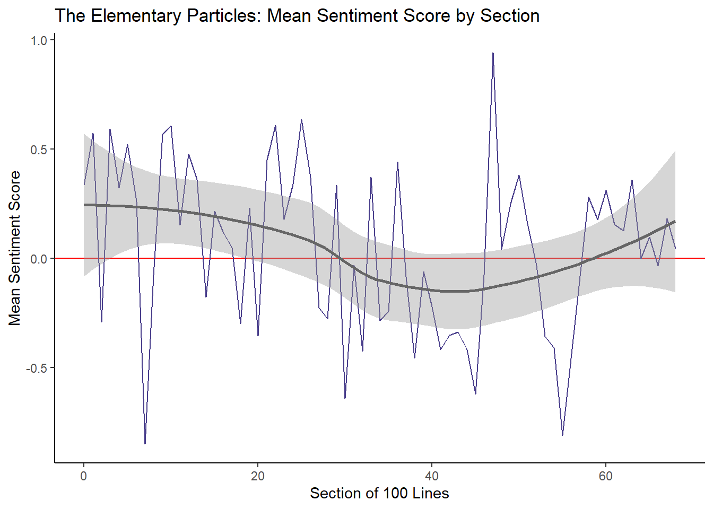
❤️ The Genius and the Goddess
genius <-
tibble(
author = "Aldous Huxley",
title = "The Genius and the Goddess",
text = read_lines("data/the_genius_and_the_goddess.txt", skip_empty_rows = TRUE)
)
head(genius, 10)# A tibble: 10 × 3
author title text
<chr> <chr> <chr>
1 Aldous Huxley The Genius and the Goddess " ALDOU…
2 Aldous Huxley The Genius and the Goddess " The G…
3 Aldous Huxley The Genius and the Goddess " the …
4 Aldous Huxley The Genius and the Goddess " Copyright © A…
5 Aldous Huxley The Genius and the Goddess "“The trouble with fiction,” said J…
6 Aldous Huxley The Genius and the Goddess "sense. Reality never makes sense.”"
7 Aldous Huxley The Genius and the Goddess "“Never?” I questioned."
8 Aldous Huxley The Genius and the Goddess "“Maybe from God’s point of view,” …
9 Aldous Huxley The Genius and the Goddess "has unity, fiction has style. Fact…
10 Aldous Huxley The Genius and the Goddess "existence is always one damned thi…tidy_genius <- genius %>%
mutate(linenumber = row_number()) %>%
unnest_tokens(word, text)
tidy_genius# A tibble: 32,800 × 4
author title linenumber word
<chr> <chr> <int> <chr>
1 Aldous Huxley The Genius and the Goddess 1 aldous
2 Aldous Huxley The Genius and the Goddess 1 huxley
3 Aldous Huxley The Genius and the Goddess 2 the
4 Aldous Huxley The Genius and the Goddess 2 genius
5 Aldous Huxley The Genius and the Goddess 2 and
6 Aldous Huxley The Genius and the Goddess 3 the
7 Aldous Huxley The Genius and the Goddess 3 goddess
8 Aldous Huxley The Genius and the Goddess 4 copyright
9 Aldous Huxley The Genius and the Goddess 4 aldous
10 Aldous Huxley The Genius and the Goddess 4 huxley
# ℹ 32,790 more rowsMost common positive and negative words
tidy_genius %>%
inner_join(get_sentiments("bing")) %>%
count(word, sentiment) %>%
group_by(sentiment) %>%
slice_max(n, n = 10) %>%
ungroup() %>%
mutate(word = reorder(word, n)) %>%
ggplot(aes(n, word, fill = sentiment)) +
geom_col(show.legend = FALSE) +
facet_wrap(~ sentiment, scales = "free") +
theme_classic()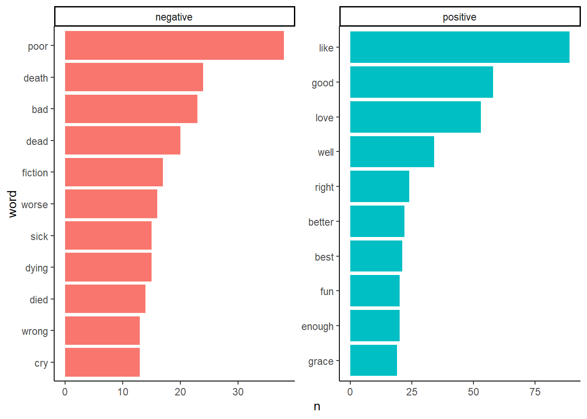
tidy_genius %>%
inner_join(get_sentiments("afinn")) %>%
group_by(value) %>% # Grouping by sentiment scores
summarize(n = n()) # A tibble: 9 × 2
value n
<dbl> <int>
1 -5 1
2 -4 22
3 -3 256
4 -2 462
5 -1 289
6 1 314
7 2 422
8 3 288
9 4 67tidy_genius %>%
inner_join(get_sentiments("afinn")) %>%
group_by(value) %>% # Grouping by sentiment scores
summarize(n = n()) %>%
ggplot(aes(value, n)) +
geom_bar(stat = "identity", fill = "seagreen3", color = "black") +
scale_x_continuous(breaks = seq(-5, 5, by = 1)) +
ggtitle("The Genius and the Goddess Sentiment Scores by Words") +
xlab("Sentiment Score") +
ylab("Frequency of Words") +
theme_classic()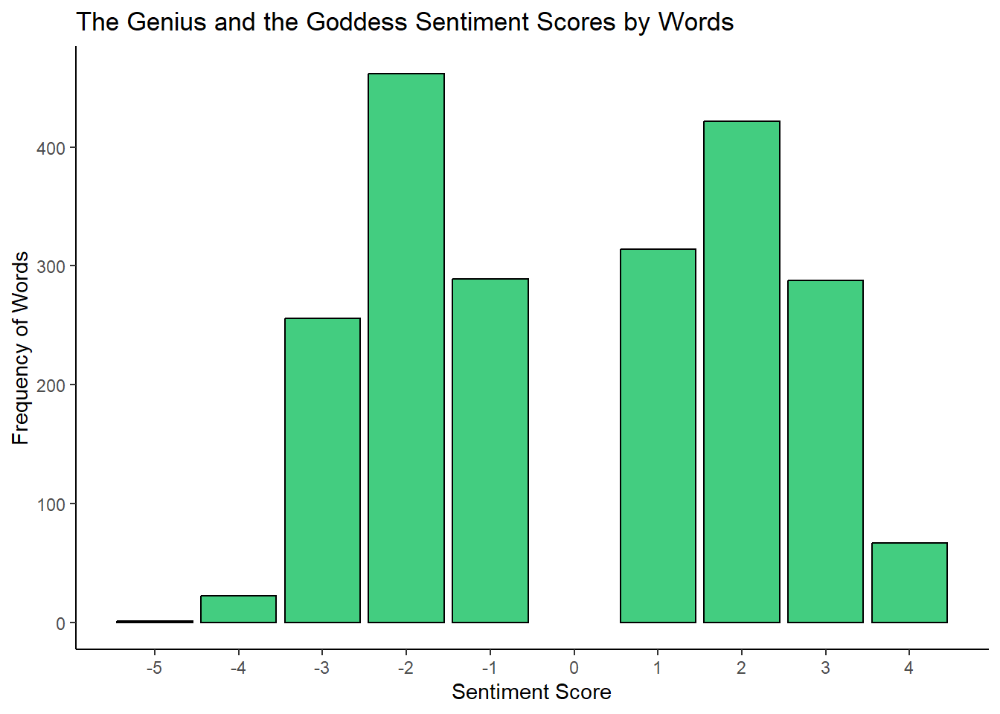
tidy_genius %>%
inner_join(get_sentiments("afinn")) %>% # Use afinn
group_by(section = linenumber %/% 25) %>% # Divide text
summarize(score = mean(value)) %>% # Section scores
ggplot(aes(section, score)) +
geom_hline(yintercept = 0, col = "red") +
geom_line(col = "darkslateblue") +
geom_smooth(method = loess, col = "gray40") +
ggtitle("The Genius and the Goddess: Mean Sentiment Score by Section") +
ylab("Mean Sentiment Score") +
xlab("Section of 100 Lines") +
theme_classic()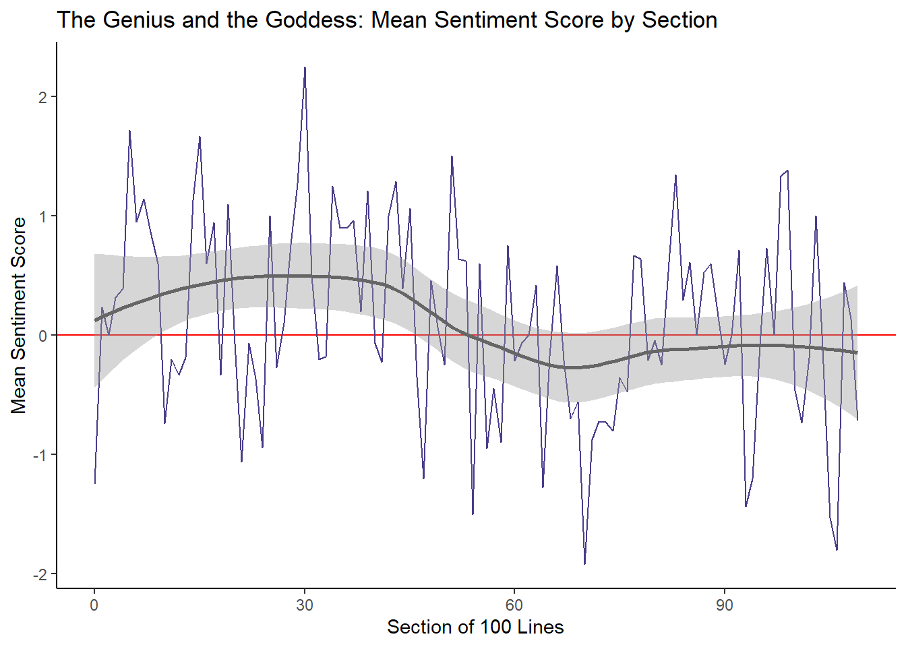
txtclean <- function(x, title){
require(dplyr)
require(stringr)
require(tibble)
x <- x %>%
select(text) %>%
iconv(to = "UTF-8") %>%
base::tolower() %>%
paste0(collapse = " ") %>%
stringr::str_squish()%>%
stringr::str_split(" ") %>%
unlist() %>%
tibble::tibble() %>%
dplyr::select(word = 1, everything()) %>%
dplyr::mutate(novel = title) %>%
dplyr::anti_join(stop_words) %>%
dplyr::mutate(word = str_remove_all(word, "\\W")) %>%
dplyr::filter(word != "")
}we <- txtclean(we, "We")
elementary_particles <- txtclean(elementary_particles, "The Elementary Particles")
genius <- txtclean(genius, "The Genius and the Goddess")novels <- bind_rows(we, elementary_particles, genius)
novels %>%
count(novel)# A tibble: 3 × 2
novel n
<chr> <int>
1 The Elementary Particles 40028
2 The Genius and the Goddess 16308
3 We 31713glimpse(novels)Rows: 88,049
Columns: 2
$ word <chr> "ceugene", "zamiatin", "we", "authorized", "translation", "russi…
$ novel <chr> "We", "We", "We", "We", "We", "We", "We", "We", "We", "We", "We"…novels_anno <- novels %>%
group_by(novel) %>%
mutate(words = n()) %>%
left_join(get_sentiments("nrc")) %>%
mutate(novel = factor(novel),
sentiment = factor(sentiment))
novels_anno# A tibble: 109,113 × 4
# Groups: novel [3]
word novel words sentiment
<chr> <fct> <int> <fct>
1 ceugene We 31713 <NA>
2 zamiatin We 31713 <NA>
3 we We 31713 <NA>
4 authorized We 31713 positive
5 translation We 31713 trust
6 russian We 31713 <NA>
7 by We 31713 <NA>
8 gregory We 31713 <NA>
9 zilboorg We 31713 <NA>
10 york We 31713 <NA>
# ℹ 109,103 more rowsnovels_ <- novels_anno %>%
group_by(novel) %>%
group_by(novel, sentiment) %>%
summarise(sentiment = unique(sentiment),
sentiment_freq = n(),
words = unique(words)) %>%
filter(is.na(sentiment) == F) %>%
mutate(percentage = round(sentiment_freq/words*100, 1))
novels_# A tibble: 30 × 5
# Groups: novel [3]
novel sentiment sentiment_freq words percentage
<fct> <fct> <int> <int> <dbl>
1 The Elementary Particles anger 1015 40028 2.5
2 The Elementary Particles anticipation 1747 40028 4.4
3 The Elementary Particles disgust 900 40028 2.2
4 The Elementary Particles fear 1402 40028 3.5
5 The Elementary Particles joy 1590 40028 4
6 The Elementary Particles negative 2688 40028 6.7
7 The Elementary Particles positive 3832 40028 9.6
8 The Elementary Particles sadness 1494 40028 3.7
9 The Elementary Particles surprise 823 40028 2.1
10 The Elementary Particles trust 2200 40028 5.5
# ℹ 20 more rowsnovels_ %>%
filter(sentiment != "positive",
sentiment != "negative") %>%
ggplot(aes(sentiment, percentage, fill = novel)) +
geom_bar(stat="identity",
position=position_dodge()) +
scale_fill_manual(name = "", values=c("orange", "gray70", "red")) +
theme_bw() +
theme(legend.position = "top")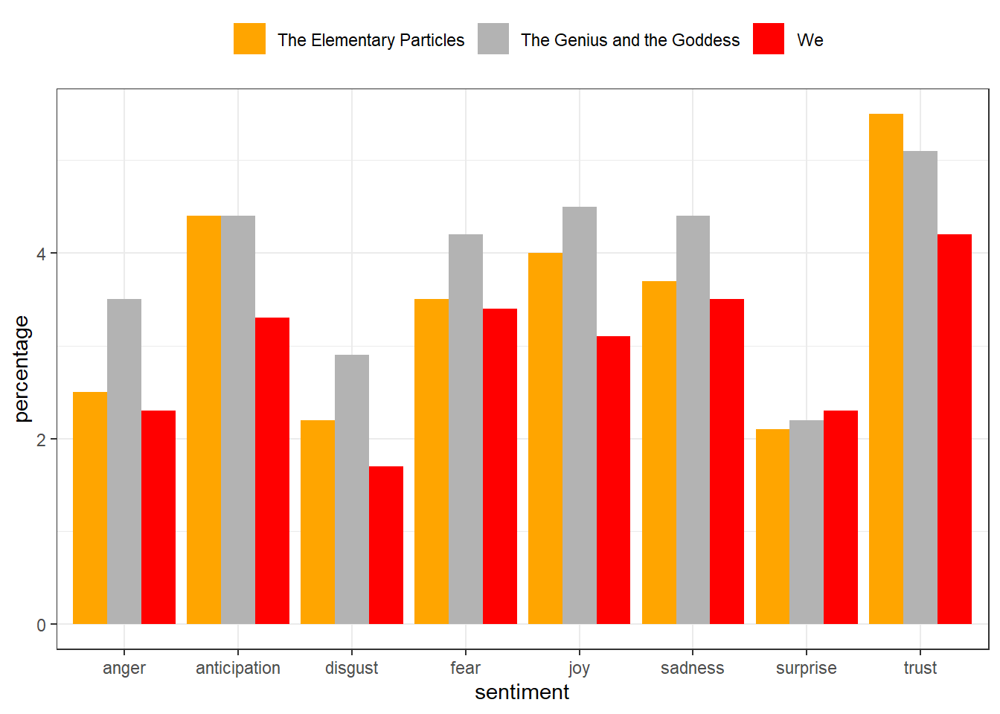
novels_ %>%
filter(sentiment != "positive",
sentiment != "negative") %>%
mutate(sentiment = factor(sentiment,
levels = c("anger", "fear", "disgust", "sadness",
"surprise", "anticipation", "trust", "joy"))) %>%
ggplot(aes(novel, percentage, fill = sentiment)) +
geom_bar(stat="identity", position=position_dodge()) +
scale_fill_brewer(palette = "RdBu") +
theme_bw() +
theme(legend.position = "right") +
coord_flip()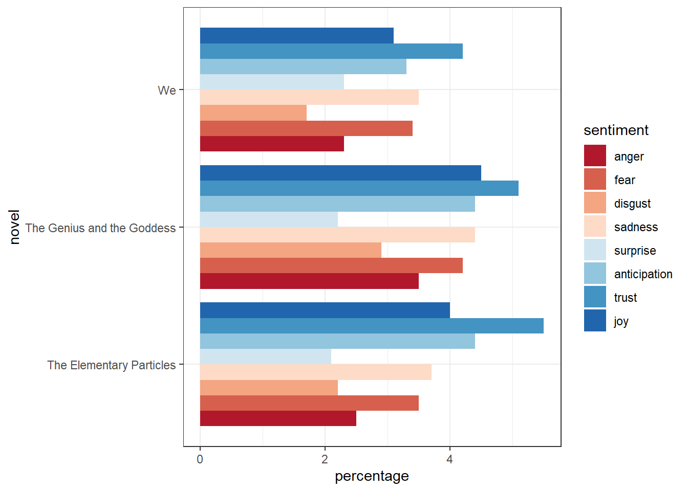